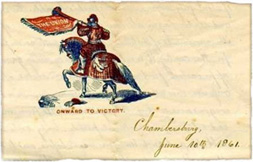

|  |
To search select personal papers by keyword, author, or subject,
go to the letters or diaries search pages.
Simon Cameron was the United States Secretary of War during the first year of war. This collection contains prewar letters (1859-1861) written by Franklin County men regarding a variety of issues. Topics discussed in the letter include Cameron's conflicts with Alexander K. McClure, Pennsylvania and national politics, the Republican party, and political appointments.
Abraham Essick was a Lutheran minister who spent some time before the war in Franklin County, Pennsylvania. Essick was a native of Franklin County, but left that area in the 1840s. His diary (1849-1888) begins when he received his license to preach in 1849. It continues through the 1850s, when Essick preached before congregations in Pennsylvania, Ohio, and Maryland. Of special interest is his account of his time in Winchester, Virginia, where he also preached, and where he took note of the differences between Virginia and Pennsylvania. Essick returned to Franklin County for a visit in 1861, and his diary continues with his thoughts on the challenges of preaching in wartime.
Alexander McClure was a Pennsylvania state senator before the war and active in politics all of his life. McClure's prewar letters discuss local, state, and national politics in great detail. This collection includes letters to Eli Slifer, who served as Secretary of the Commonwealth under Governor Andrew Gregg Curtin, Thaddeus Stevens, and Pennsylvania Governor Andrew Curtin. The Abraham Lincoln Papers on the Library of Congress' American Memory website includes approximately one hundred letters written by, or referring to, McClure. Topics covered in these letters include election campaigns and McClure's political rivalry with Simon Cameron. This link to the Abraham Lincoln Papers takes you out of the Valley of the Shadow project.
Edward McPherson represented Franklin and Adams counties as a Republican in the United States House of Representatives from 1859 to 1863. He served on the Republican National Committee in 1860. This collection of prewar letters (1850-1860) includes references to local, state, and national politics. In particular, McPherson and his correspondents discussed Republican politics and the possibilities of preserving the Union.
Anna Mellinger was the young wife of a Franklin County farmer. She kept this prewar diary (1857) where she carefully documented the weather and the everyday activities in and around a Pennsylvanian farm. She refers often to family members, friends, and church activities.
This collection of Franklin County Wills (1858-1859) was drawn randomly from the collections on microfilm at the Pennsylvania State Archives in Harrisburg, Pennsylvania. Men and women specified the disposition of their property, wealth, and assets through their wills.